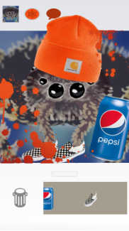

Spindr
Spindr is a mobile game built from Unity made to parody Tinder and modern dating culture. So far, this game can only be played on Android. Players can customize their profile with sponsored props, swipe on appealing spiders and match with them, message them, and play provocative mini-games. I created much of the UI system, including the customization, swiping, and messaging aspects of the game.
This was a more light-hearted project, but my team and I wanted to create something with substance. We analyzed how Tinder operated through subscriptions, swiping algorithms, and brand sponsorship. We incorporated these into the game to provide social commentary. Messaging was one of the greater challenges, as we wanted the game to respond appropriately to a text. So, the AI parses through the message and we had a list of messages the AI could send in that scenario.